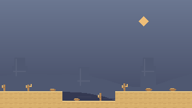
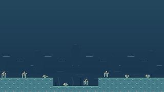
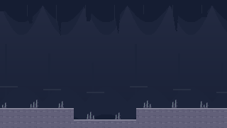
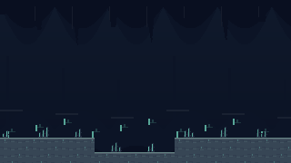
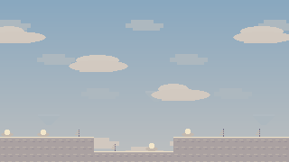
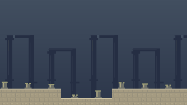
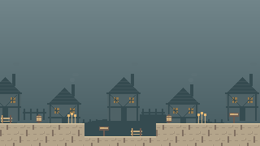
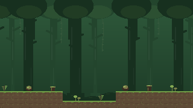

<!-- Static environment review sheet: arranges reference images for inspection; it is not part of the game UI. -->
<!doctype html><html lang="en"><meta charset="utf-8"><meta name="viewport" content="width=device-width,initial-scale=1"><title>Summit · environment art review</title><style>body{margin:0;background:#171e30;color:#e6e1d4;font:16px system-ui,sans-serif}main{max-width:1380px;margin:auto;padding:32px}h1{font-size:36px}p{color:#b3c2cf;line-height:1.6}section{padding:22px;background:#232d41;margin:24px 0;border:1px solid #46546a;border-radius:6px}h2{text-transform:capitalize}.compare{display:grid;grid-template-columns:1fr 1fr;gap:20px}figure{margin:0}figcaption{color:#c1c8cf;margin:8px 0}img{display:block;width:100%;image-rendering:pixelated}a{color:#a8d7c1}@media(max-width:850px){.compare{grid-template-columns:1fr}}button{font:inherit;color:#e6e1d4;background:#39465d;border:1px solid #61728b;padding:8px 14px;margin:4px;cursor:pointer}body.before-only .after,body.after-only .before{display:none}body.before-only .compare,body.after-only .compare{grid-template-columns:1fr}</style><main><h1>Environment art review</h1><p>All eight themes keep their native 8×8 terrain and existing palette. This pass replaces rounded silhouettes with rectangular clusters, stepped clouds, square foliage and angular cave ledges. Map layouts, room themes and collision are unchanged.</p><p><a href="../preview.html">Full theme gallery and room map</a></p><nav><button onclick="document.body.className=''">Side by side</button><button onclick="document.body.className='before-only'">Before</button><button onclick="document.body.className='after-only'">After</button></nav><section><h2>sand</h2><p>Quieter sandstone strata, eroded outcrops, varied cacti and small rocks.</p><div class="compare"><figure class="before"><figcaption>Before</figcaption></figure><figure class="after"><figcaption>After</figcaption></figure></div></section><section><h2>sea</h2><p>Reef stone, distant sea stacks, layered ripples, coral and shells.</p><div class="compare"><figure class="before"><figcaption>Before</figcaption></figure><figure class="after"><figcaption>After</figcaption></figure></div></section><section><h2>cavern</h2><p>Subtle slab shading, angular ceiling formations and clustered minerals.</p><div class="compare"><figure class="before"><figcaption>Before</figcaption></figure><figure class="after"><figcaption>After</figcaption></figure></div></section><section><h2>cavern deep</h2><p>Dark stone veins, restrained mineral light and deeper silhouettes.</p><div class="compare"><figure class="before"><figcaption>Before</figcaption></figure><figure class="after"><figcaption>After</figcaption></figure></div></section><section><h2>sky</h2><p>Chalky terrain, stepped cloud banks and distant floating stone.</p><div class="compare"><figure class="before"><figcaption>Before</figcaption></figure><figure class="after"><figcaption>After</figcaption></figure></div></section><section><h2>temple</h2><p>Worn masonry, column grooves, chipped lintels and broken pillars.</p><div class="compare"><figure class="before"><figcaption>Before</figcaption></figure><figure class="after"><figcaption>After</figcaption></figure></div></section><section><h2>building</h2><p>Quiet plaster, timber details, roof tiles, chimney smoke, fences and barrels.</p><div class="compare"><figure class="before"><figcaption>Before</figcaption></figure><figure class="after"><figcaption>After</figcaption></figure></div></section><section><h2>forest</h2><p>Square foliage clusters, angular branches, roots, ferns, stumps and stepped mushroom caps.</p><div class="compare"><figure class="before"><figcaption>Before</figcaption></figure><figure class="after"><figcaption>After</figcaption></figure></div></section></main></html>